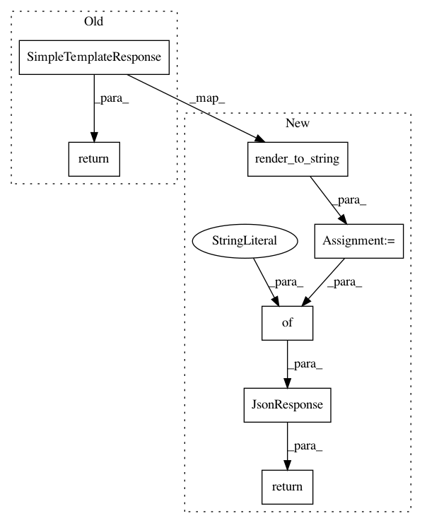

af0d5af82a29ae39955331be6ca50b575b7b1466,debug_toolbar/panels/sql/views.py,,sql_select,#,11
Before Change
"alias": form.cleaned_data["alias"],
}
// Using SimpleTemplateResponse avoids running global context processors.
return SimpleTemplateResponse("debug_toolbar/panels/sql_select.html", context)
return HttpResponseBadRequest("Form errors")
@csrf_exempt
After Change
"headers": headers,
"alias": form.cleaned_data["alias"],
}
content = render_to_string("debug_toolbar/panels/sql_select.html", context)
return JsonResponse({"content": content})
return HttpResponseBadRequest("Form errors")
@csrf_exempt
In pattern: SUPERPATTERN
Frequency: 3
Non-data size: 7
Instances
Project Name: jazzband/django-debug-toolbar
Commit Name: af0d5af82a29ae39955331be6ca50b575b7b1466
Time: 2020-05-19
Author: jon.dufresne@gmail.com
File Name: debug_toolbar/panels/sql/views.py
Class Name:
Method Name: sql_select
Project Name: jazzband/django-debug-toolbar
Commit Name: af0d5af82a29ae39955331be6ca50b575b7b1466
Time: 2020-05-19
Author: jon.dufresne@gmail.com
File Name: debug_toolbar/panels/sql/views.py
Class Name:
Method Name: sql_profile
Project Name: jazzband/django-debug-toolbar
Commit Name: af0d5af82a29ae39955331be6ca50b575b7b1466
Time: 2020-05-19
Author: jon.dufresne@gmail.com
File Name: debug_toolbar/panels/sql/views.py
Class Name:
Method Name: sql_explain